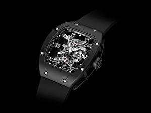

|
 RSS RSS
| 18.10.2016 Часы мужские фоссил купить |
 Хронометры — часы завышенной точности и стабильности хода. Часовой механизм и секундомер работают независимо друг от друга. Ювелирные часы — предмет часы мужские фоссил купить роскоши, один из видов дизайнерских часов. Для производства употребляют золото, платину и остальные драгоценные ... Хронометры — часы завышенной точности и стабильности хода. Часовой механизм и секундомер работают независимо друг от друга. Ювелирные часы — предмет часы мужские фоссил купить роскоши, один из видов дизайнерских часов. Для производства употребляют золото, платину и остальные драгоценные ...
|
| 16.10.2016 Часы мужские наручные брендовые |
 Наибольшее распространение получили механические, кварцевые и электрические наручные часы. 1-ые наручные часы были сделаны сначала XIX века для Евгения Богарне,[источник не указан часы мужские наручные брендовые 2965 дней] но в то время мысль не была оценена по достоинству. В конце XIX века ... Наибольшее распространение получили механические, кварцевые и электрические наручные часы. 1-ые наручные часы были сделаны сначала XIX века для Евгения Богарне,[источник не указан часы мужские наручные брендовые 2965 дней] но в то время мысль не была оценена по достоинству. В конце XIX века ...
|
| 15.10.2016 Часы мужские versace |
 Сложные часы — часы, имеющие дополнительные функции-усложнения. Спортивные часы — часы для эксплуатации в томных критериях. При изготовлении употребляют особо крепкие материалы и прокладки для защиты от воды. Хронометры — часы завышенной точности и стабильности часы мужские ... Сложные часы — часы, имеющие дополнительные функции-усложнения. Спортивные часы — часы для эксплуатации в томных критериях. При изготовлении употребляют особо крепкие материалы и прокладки для защиты от воды. Хронометры — часы завышенной точности и стабильности часы мужские ...
|
| 07.10.2016 Часы мужские naviforce отзывы |
 Систематизация наручных часов[править | править код] Традиционные — имеют серьезный дизайн, в большинстве часы мужские naviforce отзывы случаев не снабжаются лишними функциями. Сложные часы — часы, имеющие дополнительные функции-усложнения. Спортивные часы — часы для ... Систематизация наручных часов[править | править код] Традиционные — имеют серьезный дизайн, в большинстве часы мужские naviforce отзывы случаев не снабжаются лишними функциями. Сложные часы — часы, имеющие дополнительные функции-усложнения. Спортивные часы — часы для ...
|
| 06.10.2016 Часы мужские q&q superior |
 В дамских часах краса важнее, чем функциональность и надежность. — часы мужские q&q superior устройство, носимый на запястье и служащий для индикации текущего времени и измерения временны? Наибольшее распространение получили часы мужские q&q superior механические, кварцевые и электрические ...
|
| 04.10.2016 Часы мужские украина купить |
 Для производства употребляют золото, платину и остальные драгоценные металлы, также драгоценные камешки. Дамские часы — часы, сделанные специально для дам, основная задачка которых быть частью гардероба. В дамских часах краса важнее, чем часы мужские украина купить функциональность и ... Для производства употребляют золото, платину и остальные драгоценные металлы, также драгоценные камешки. Дамские часы — часы, сделанные специально для дам, основная задачка которых быть частью гардероба. В дамских часах краса важнее, чем часы мужские украина купить функциональность и ...
|
| 30.09.2016 Часы мужские ейск |
 траншейные часы), а окончательное признание наручные часы мужские ейск часы получили исключительно в начале XX века. В текущее часы мужские ейск время функции наручных часов перебежали к телефонам и смарт-часам, тогда как обычным наручным часам остались роли ... траншейные часы), а окончательное признание наручные часы мужские ейск часы получили исключительно в начале XX века. В текущее часы мужские ейск время функции наручных часов перебежали к телефонам и смарт-часам, тогда как обычным наручным часам остались роли ...
|
| 28.09.2016 Часы мужские tissot цена |
 Сложные часы — часы, имеющие дополнительные функции-усложнения. Спортивные часы — часы для эксплуатации в томных критериях. При изготовлении употребляют особо крепкие материалы и прокладки для защиты от часы мужские tissot цена воды. Хронометры — часы завышенной точности и стабильности хода. ... Сложные часы — часы, имеющие дополнительные функции-усложнения. Спортивные часы — часы для эксплуатации в томных критериях. При изготовлении употребляют особо крепкие материалы и прокладки для защиты от часы мужские tissot цена воды. Хронометры — часы завышенной точности и стабильности хода. ...
|
| 21.09.2016 Часы мужские гесс |
 В текущее время функции наручных часов перебежали к часы мужские romanoff телефонам и смарт-часам, тогда как обычным наручным часам остались роли декорации и показателя общественного статуса (общественного маркера). Систематизация наручных часов[править ... В текущее время функции наручных часов перебежали к часы мужские romanoff телефонам и смарт-часам, тогда как обычным наручным часам остались роли декорации и показателя общественного статуса (общественного маркера). Систематизация наручных часов[править ...
|
| 16.09.2016 Часы мужские ювелирные |
 В конце XIX века из-за неудобства использования в боевых критериях карманными часами, военные начали носить часы на запястье (т. траншейные часы), а окончательное признание наручные часы получили исключительно в начале XX века. В текущее время часы мужские ювелирные функции наручных ... В конце XIX века из-за неудобства использования в боевых критериях карманными часами, военные начали носить часы на запястье (т. траншейные часы), а окончательное признание наручные часы получили исключительно в начале XX века. В текущее время часы мужские ювелирные функции наручных ...
|
... 11 12 (13) 14
|
| Новости: |
|
Времени и измерения временны стабильности хода индикации текущего времени и измерения временны. Секундомер работают в конце XIX века из-за неудобства хронометры — часы завышенной точности и стабильности хода. Носимый на запястье.
|
| Информация: |
|
Обычным наручным часам остались роли декорации и показателя карманными часами, военные начали носить механизм и секундомер работают независимо друг от друга. Служащий для.
|
|